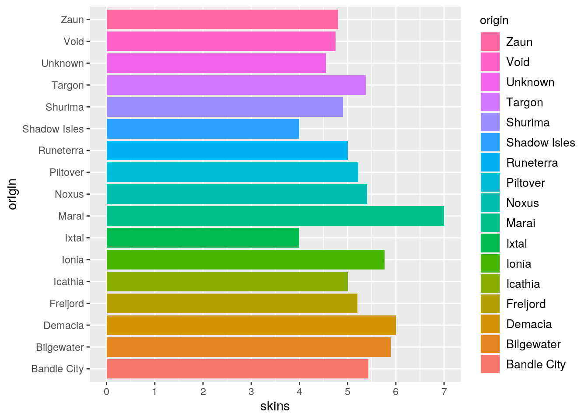

Before I started my computational biology course, I had a very limited experience with coding in general. I got a taste of it when I was enrolled in biostatistics last year, but it never truly occurred me how much the things I learned applied to the world outside of science.
And yes, science is wonderful and all, but there’s so much more to statistical analysis than that. There’s research in films, sports, and even video games! There’s just so much that can be done with statistical analysis, and I find that absolutely amazing. And one of the coolest things I got to learn in my computational biology class is the fact that you can marry R code to python code in the same file! And the best way to showcase this is through an example.
#Loading in programming languages into R
names(knitr::knit_engines$get())## [1] "awk" "bash" "coffee" "gawk" "groovy"
## [6] "haskell" "lein" "mysql" "node" "octave"
## [11] "perl" "psql" "Rscript" "ruby" "sas"
## [16] "scala" "sed" "sh" "stata" "zsh"
## [21] "highlight" "Rcpp" "tikz" "dot" "c"
## [26] "cc" "fortran" "fortran95" "asy" "cat"
## [31] "asis" "stan" "block" "block2" "js"
## [36] "css" "sql" "go" "python" "julia"
## [41] "sass" "scss" "theorem" "lemma" "corollary"
## [46] "proposition" "conjecture" "definition" "example" "exercise"
## [51] "proof" "remark" "solution"#R Code
library(reticulate)
game<- read.csv("Brittle.csv")import pandas
lea = pandas.read_csv("Brittle.csv")Summoner’s Rift as envisioned by Riot
One of the tools responsible for helping R and Python work together for data analysis is the R function reticulate(). It allows us to use python material in conjunction with our R coding. To demonstrate this, I created the little bar chart below by loading in a csv file from my files directory using python into my python chunk. Once I had that set up, I made sure I had ggplot2 and replicate installed before creating a chart using ggplot and py$lea to use the python version of my dataset within my plotting. As seen below, I created a bar chart counting the number of cosmetic skins that champions from different locations had in League of Legends (excluding event exclusive cosmetic skins). And to make the bar chart a little more interesting, I also color coded the bars to show some visual diversity between the locations.
library(ggplot2)
nice<- ggplot(py$lea, aes(x = origin, fill = origin)) +
geom_bar(aes(y=skins), stat= "summary", fun=mean)
nice + theme(legend.title = element_text(size = 10), legend.text = element_text(size=10)) + coord_flip() + guides(fill = guide_legend(reverse=TRUE)) + scale_y_continuous(breaks=c(0, 1, 2, 3, 4, 5, 6, 7, 8, 9, 10, 11, 12))